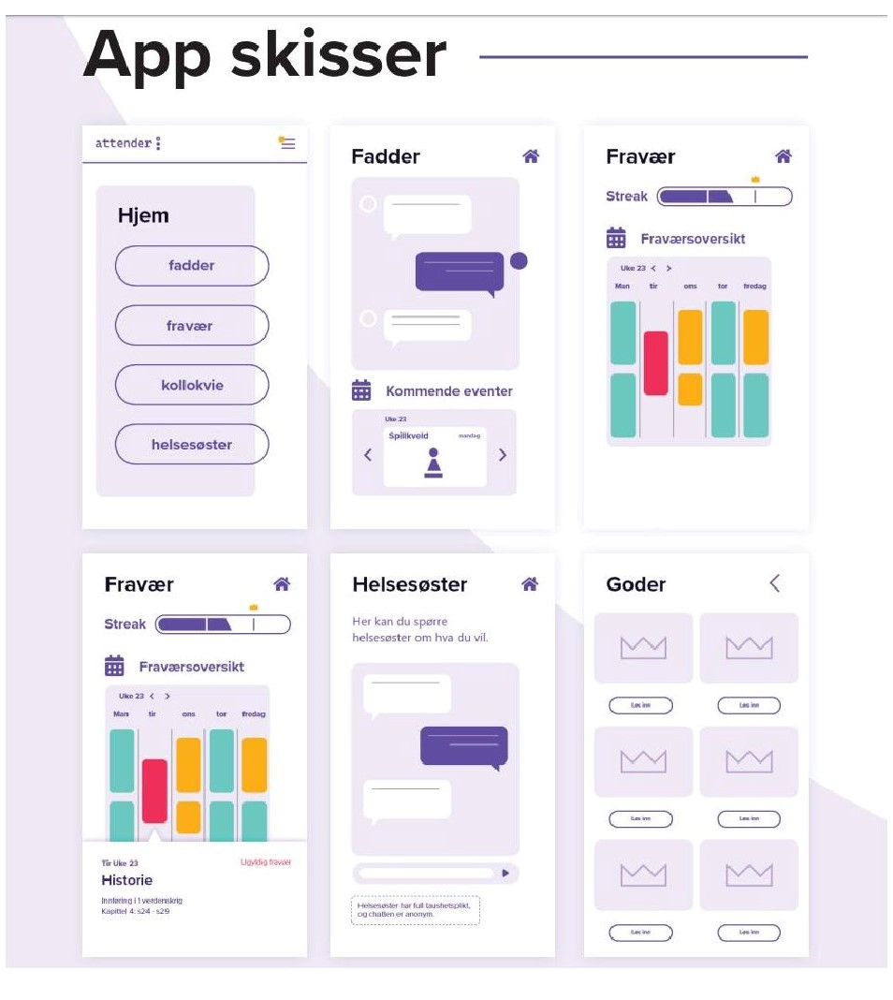

Attender is an app containing several functions related to attendance tracking, social events and guidance.
Attender will be used by teachers and students to track attendance and check in to class. The app will, if allowed, use the smartphone's location to assertain the students whereabouts. If the student is not located near the class room, the student will get a notification asking them to check in. The teacker will also be notified. In the event that the student is present, but the app has failed to register, the teacher will be able to override the app. If a student fails to attend they will get a notofication in the app and be asked if they would like to talk to someone, a point we'll talk more about later.
The data collected by the app will be used to track student's attendance so the teachers can see which subjects they are missing and if there is a pattern to their absence. Based on this data the school can help the student before it's too late. This data may also give insight into the cause of the absence, whether it's social or curricular.
When a student is absent from a class the class will show up red in their schedule in the app and it will also say what chapters and themes were reviewed during that class. If the student misses several classes and the teacher notices that the pattern is that the student avoids classes that are heavily theoretical they will be able to create an alternative teaching method for this student. If it's just a one-time thing, the student themselves will have access to what was done in class so they can easily catch up.
In order to make it even more tempting to get back to school Attender contains a reward system. When a student shows up consistently they build up a so called "streak", the longer they keep it going the more a "progress bar" increases once the progress bar is full the student unlocks a reward like a ticket to the movies or a free drink from the canteen. The prizes should not be too grand to avoid there being too much focus on it and to decrease the "gamification". If a student has been dropping out of classes and stopped showing up to school but then manages to get back they receive a "comeback bonus" rewarding them for getting back to school.
In order to battle the issue of social isolation and improve a students chances of finding new friends Attender will require the schools using the app to put into action a mentor program. second year and third year high schoolers will act as mentors or the Norwegian version: "faddere" on a voluntary basis or as an extra curicular activity. All first year students will be assigned to a mentor group. The mentors leading the groups will be responsible for planning and executing social events like afternoon boardgame sessions, football matches or movie nights. The school will supply the mentor groups with places to host these events. The mentors can collaborate when arranging the events and host mixers where the different groups can meet, when their not hosting events that are exclusive for their particular group. If a student starts missing classes their mentor will be allerted, so they too can reach out to the student and try to help. A mentor will also have the option to report a student to the school nurse or guidance councellor if they feel that the student needs professional help.
Through the app a student will be able to talk to the school nurse and guidance councellor via a chat-room. We believe that this will lower the threshold for getting help when needed. Mentors will also have shortcut to alert the school nurse about students that might need help. This will allow the school nurse to get in touch with students before it's too late thanks to them having eyes and ears on the floor through the mentors.
Attender will be developed with the students security in mind with a major focus on the rules of GDPR. The app is built on an already existing system that is in use in several high schools called NOA.
The app should be tested in a few schools to assertain if it works. If after this period of testing the app is proven to work the individual county municipalities will be responsible for financing the app. Because the reduction in drop-outs will significantly lower costs related to social care, we believe that the app will be a sound investment.
Below is an image of the apps initial design.
